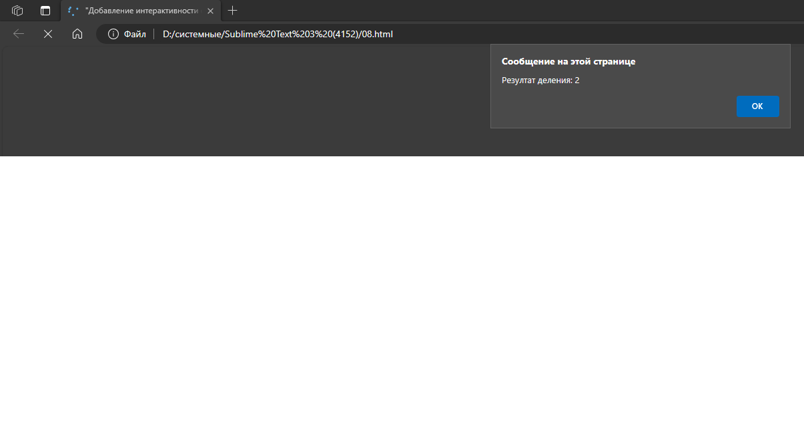
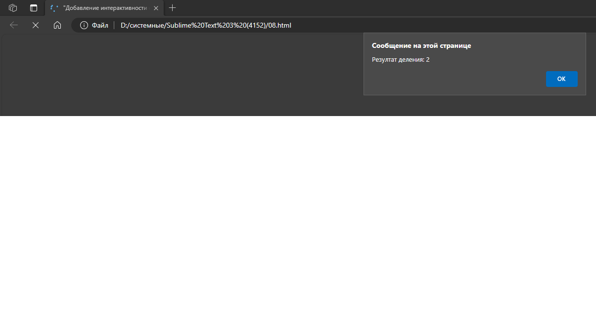

Данные статьи были написаны при помощи использования ИИ.При их создании были затронуты нейросети:YaGpt,ChatGPT 4.0.Изображения к статьям были сгенерированы нейросетью-Kandinsky 2.2.При работе над данным проэктом я улучшил свои навыки написания публицистических текстов ,а также усовершенствовал навык испльзования нейросетей.

При создании упомянутого сайта я познакомисля с структурированием данных страницы , созданием таблиц, добавлением картинок, созданием и использованием CSS, созданием нескольких видов списков.
При создании упомянутого сайта я познакомисля с более професиональным оформлением страницы, углублённым использованием CSS, добавлением блоков: header, footer, content и добавлением в них фото, навигационного меню, текста, внешних ссылок и т.д;
 
При создании упомянутого сайта я закрепил способы добавления интерактивности при помощи языка JavaScript, вывода уведомлений , написания функций JavaScript; научился создавать примитивный калькулятор на основе JavaScript.

Выполняя практическую работу я освоил навык создания и оформления списков при помощи свойства style.
Выполняя практическую работу я освоил навык создания и оформления списков:вложенных,вложенных с уровнями, нумерованных, маркированных.
Выполняя практическую работу я освоил навык создания внешних и внутренних ссылок и системы навигации на веб-странице.

Выполняя практическую работу я освоил навык создания и оформления таблиц.
Выполняя практическую работу я освоил навык оформления различных элементов, групп элементов, классов при помощи CSS.
Выполняя практическую работу я освоил навык работы со структурой страницы.Создал, стилизовал и заполнил header,main(с добавлением selection),footer.
Выполняя практическую работу я улучшил навык добавления интерактивности веб-странице с помощью JavaScript.Задал пользователю вопрос при помощи "confirm".Создал функцию с двумя аргументами,нашёл их сумму, вывел с помощью "alert".Создал калькулятор юаней к рублю.